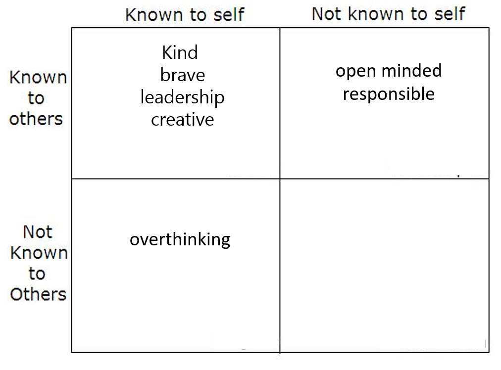

Professional Skills definition :
Professional skills, also known as soft skills or employability skills, are the non-technical, interpersonal abilities that are essential for success in the workplace. And also i understanded those skills are transferable.
Definition of Employability Skills :
Employability skills, also known as soft skills or transferable skills, are the essential qualities and attributes that go beyond technical knowledge and are sought after by employers.
There are some examples for Employability skills :
Communication , teamwork , problem-solving , adaptability , time management , leadership
Skills Necessary for Employment
here we were learn about more details about the skills needed for employment.At first we discussed about communication skills.The communication skills means the ability to convey information effectively through various channels, including verbal, written, and non-verbal communication.
Then we were discussed about critical thinking and problem solving skills.That means the ability to analyzing information, identifying challenges, and developing effective solutions.
And also teamwork, adaptability, flexibility, time management and leadership are the other important skills of an Employee.
Next we were learned about the workplace skills those are technical skills, soft skills and transferable skills.
So technical skills means specific expertise and knowledge require for some job industry And soft skills means communication skills that improve our overall performance and also transferable skills means skills that can be applied across different roles and industries.
The problem solving and adaptability are most suitable example for transferable skills.After that, we learnt about character, attitudes, values, and beliefs. Then, we talked about each of these topics individually. and we talked about how beneficial such things are to our future.
Activity
Miss Ishara, our lecturer, gave us a worksheet that had some truly interesting group activities. It included several practical tasks pertaining to employability skills. In the worksheet, there were different situations that we had to discuss. The worksheet offered several main topics for groups to select from. After our group decided on a topic and discussed it with the other members of the group, we presented it. The lecturer in charge of the task provided us some suggestions and comments on the activity. In the end, our lecturer assigned us a short examination to complete. Ten questions about today's lecture were on that paper. That concludes the work for today's lecture.
next we discussed about another small task named Johari window exercise.

Johari window
Johari Window is a graphic model of awareness in interpersonal relations.
Developed by,
- Joseph Luft (1916–2014)
- Harrington Ingham (1916–1995)
Finally, we talked about the tips for improving professional skills, which includes accepting challenges, seeking criticism, practicing and applying, and never stopping learning. In summary, that lecture discussion gave us valuable lessons for our lives as well as important knowledge on professional skills in job environments.